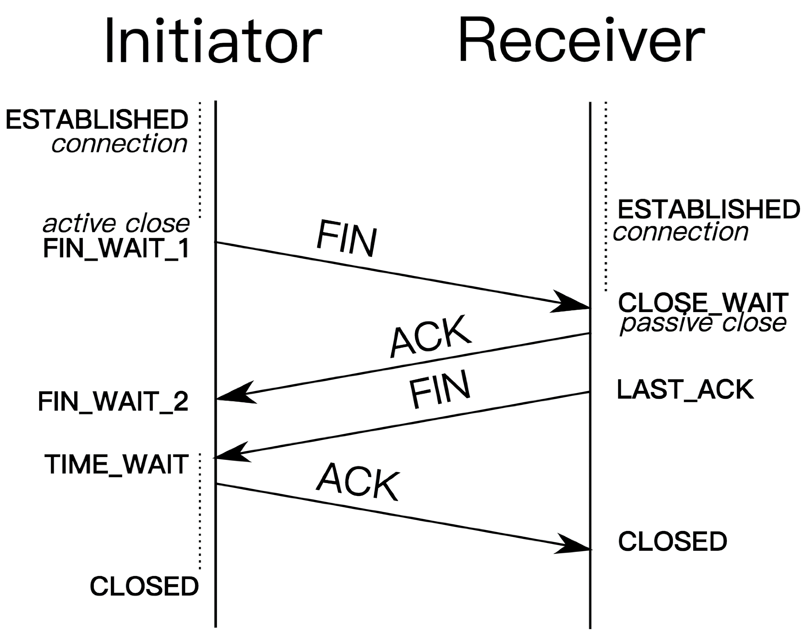
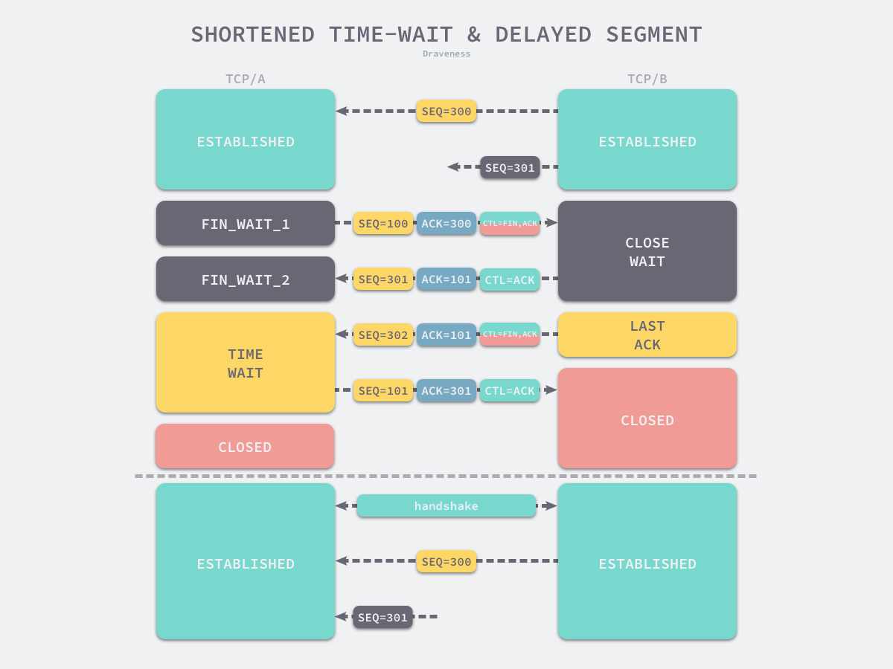
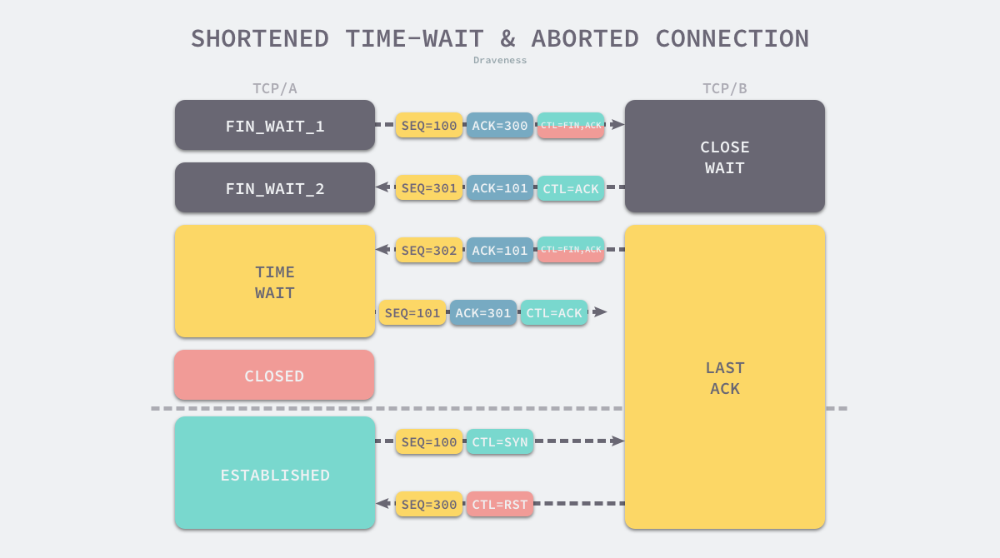
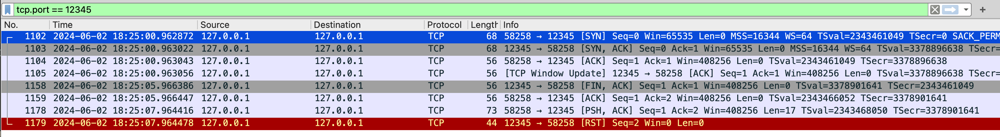

Networking (2) TCP Close connection
Dạo gần đây mình có cơ hội làm việc với nhiều thứ liên quan đến TCP/UDP protocol mà mơ hồ quá nên phải dành thời gian đọc lại chủ đề này, rồi mình phát hiện ra môn Mạng máy tính ở BK mình học không hiểu gì cả :v, không biết sao qua môn được nữa :)). À mà cũng đúng thôi, hồi đó học không hiểu gì toàn trốn xuống H1 hoặc ngủ trên lớp với mấy đứa bạn xD, công nhận tiết học này mình có sức ngủ thật ~~.
Vì đọc vẫn còn nhiều thứ mơ hồ nên mình muốn viết ra để tự vấn lại bản thân những thứ mình tìm hiểu được, bài hôm nay sẽ viết về cách TCP connection được đóng.

TCP là giao thức bidirectional và full-duplex, có nghĩa là mỗi phía có thể vừa nhận, vừa gửi dữ liệu và hai việc này có thể diễn ra đồng thời. Tạm gọi 2 đầu của connection là client - peer (đối xứng), client - peer sẽ tự quản lý đầu connection của nó, vì thế, 1 trong 2 có thể yêu cầu đóng connection, quá trình này diễn ra với nguyên tắc 4-way handshake, phía chủ động đóng connection sẽ tương ứng với initiator, phía còn lại là receiver như hình trên:
initiatorgửi gói tinFINđếnreceiverđể yêu cầu đóng connection, biểu thị rằng mình không gửi dữ liệu nữa và bước vào trạng gáiFIN_WAIT_1receivernhận được gói tinFINsẽ phản hồi bằng gói tinACK(cách hoạt động thường thấy của TCP), nó có ý nghĩa cho initiator biết rằng receiver đã nhận được gói tinFIN, lúc này,receiverbước vào trạng tháiCLOSE_WAITreceivergửi gói tinFINđếninitiatorđể yêu cầu đóng connection, bước vào giai đoạnLAST_ACKinitiatornhận đượcFINsẽ phản hồi bằngACK, bước vào giai đoạnTIME_WAITreceivernhận được gói tinACK,initiatorvẫn sẽ ở trạng tháiTIME_WAIT
Nếu các bước này diễn ra đúng, receiver sẽ đóng connection bình thường, receiver sẽ ở trạng thái TIME_WAIT trong khoảng 2MSL trước khi nó thực sự đóng connection.
MSL is the maximum time a TCP segment is expected to live, or stay in the network. The original TCP specification, RFC 793, defines this as 2 minutes.
Tạm dịch: MSL là khoảng thời gian tối đa một gói tin TCP tồn tại trong đường truyền mạng. Theo thiết kế ban đầu RFC 793, nó có giá trị 2 phút.
Vậy tại sao một TCP connection lại có trạng thái TIME_WAIT, liệu nó thực sự quan trọng?
TIME WAIT
Lý do phía chủ động đóng TCP connection bước vào trạng thái TIME_WAIT trong khoảng thời gian 2MSL thay vì trực tiếp bước vào trạng thái CLOSED:
- ngăn chặn việc những việc gói tin bị delayed do network được nhận bởi một connection mới → nếu việc này xảy ra, TCP không còn là một giao thức tin cậy nữa
- đảm bảo TCP connection được đóng lại chính xác ở peer, tức peer có thể nhận được gói tin
FIN
Tính tin cậy trong việc truyền dữ liệu
Nếu client tạo một connection mới ngay sau khi gửi gói tin ACK và port của connection này trùng với connection trước đó, có thể xảy ra trường hợp những gói tin của connection trước bị delay và sẽ được xử lý bởi connection mới, điều này xảy ra đồng nghĩa với việc giao thức TCP không còn là một giao thức truyền dữ liệu đáng tin cậy nữa.

Ví dụ gói tin với SEQ=301, nếu không có trạng thái TIME_WAIT hoặc giá trị của TIME_WAIT không đúng, nó có thể được xử lý bởi connection mới.
Tính đúng đắn của việc đóng connection
Nếu client tạo mới một connection tới peer ngay lập tức mà không quan tâm liệu peer có nhận được gói tin ACK cuối cùng không thì sẽ xảy ra vấn đề, peer vẫn xem connection hiện tại là hợp lệ và sẽ gửi gói tin RST khi client cố gắng tạo connection mới bằng gói tin SYN (3-handshake).
Trạng thái TIME_WAIT sẽ đảm bảo được:
- peer sẽ nhận được gói tin
ACKvà đóng connection bình thường - nếu không nhận được gói tin
ACK, peer có thể kích hoạt cơ chế retransmission gói tinFIN

Ví dụ khi client tạo connection mới với gói tin SYN, SEQ=100, peer phản hồi bằng gói tin RST để từ chối tạo connection mới.
Ví dụ Go + Netstat
Trạng thái của TCP connection
// server
func main() {
ln, err := net.Listen("tcp", ":12345")
if err != nil {
fmt.Println("Error setting up server:", err)
return
}
fmt.Println("Server listening on port 12345")
for {
conn, err := ln.Accept()
if err != nil {
fmt.Println("Error accepting connection:", err)
continue
}
fmt.Println("Client connected")
go handleConnection(conn)
}
}
func handleConnection(conn net.Conn) {
// sleep when client connect
time.Sleep(30 * time.Second)
}
// client
func main() {
conn, err := net.Dial("tcp4", "127.0.0.1:12345")
if err != nil {
fmt.Println("Error connecting to server:", err)
return
}
fmt.Println("Connected to server")
conn.Close()
// sleep to keep process
time.Sleep(10 * time.Second)
}
Ví dụ này mô phỏng một client đóng kết nối ngay sau khi connect tới server, sau đó dùng netstat để xem các connection liên quan đến port "12345", kết quả như sau:
> netstat -an | grep 12345
tcp4 0 0 127.0.0.1.12345 127.0.0.1.62965 CLOSE_WAIT
tcp4 0 0 127.0.0.1.62965 127.0.0.1.12345 FIN_WAIT_2
tcp46 0 0 *.12345 *.* LISTEN
- client là phía chủ động đóng connection, nó sẽ ở trạng thái “FIN_WAIT_2” sau khi nhận gói tin
ACKcủa server - server sau khi nhận gói tin
FINcủa client và phản hồi bằngACKnhưng chưa gửi lạiFINsẽ ở trạng tháiCLOSE_WAIT
Đây là một ví dụ về half-closed của một TCP connection.
Tiếp theo, nếu server gửi gói về gói tin FIN và client phản hồi bằng ACK, connection sẽ được đóng thành công, client sẽ vẫn ở trạng thái TIME_WAIT, điều này được kiểm chứng bằng công cụ netstat.
> netstat -an | grep 12345
tcp46 0 0 *.12345 *.* LISTEN
tcp4 0 0 127.0.0.1.65482 127.0.0.1.12345 TIME_WAIT
Connection reset by peer
Đối với các ứng dụng thông thường, developer sẽ làm việc với các giao thức ở tầng ứng dụng, ví dụ HTTP. Nếu từng sử dụng các thư viện client HTTP, ít nhiều mọi người đã từng thấy lỗi Connection reset by peer, đây là một lỗi xảy ra ở tầng transport, khi client nhận được gói tin RST từ server. Như đã được đề cập ở trên, TCP connection được quản lý bởi client và peer, nên có thể xảy ra trường hợp client chưa nhận thức được connection đã được đóng từ phía peer.
Mình sẽ demo bằng bằng Go và dùng Wireshark để capture gói tin:
// server
func main() {
ln, err := net.Listen("tcp", ":12345")
if err != nil {
fmt.Println("Error setting up server:", err)
return
}
fmt.Println("Server listening on port 12345")
for {
// Accept a connection.
conn, err := ln.Accept()
if err != nil {
fmt.Println("Error accepting connection:", err)
continue
}
fmt.Println("Client connected")
go handleConnection(conn)
}
}
func handleConnection(conn net.Conn) {
var bs = make([]byte, 1024)
for {
// set read timeout to make this read error and close connection
conn.SetDeadline(time.Now().Add(5 * time.Second))
n, err := conn.Read(bs)
if err != nil {
log.Println("read messed up: " + err.Error())
conn.Close()
break
} else {
fmt.Println("read", n, "bytes")
fmt.Println("read: " + string(bs))
}
time.Sleep(time.Second)
}
fmt.Println("Connection closed by server")
}
// client
func main() {
// Connect to the server on localhost, port 12345.
conn, err := net.Dial("tcp4", "127.0.0.1:12345")
if err != nil {
fmt.Println("Error connecting to server:", err)
return
}
fmt.Println("Connected to server")
time.Sleep(7 * time.Second)
_, err = conn.Write([]byte("Hello from client"))
if err != nil {
log.Println("write error: " + err.Error())
}
// sleep to make sure client receive "RST" packet
time.Sleep(1 * time.Second)
var bs = make([]byte, 1024)
for {
n, err := conn.Read(bs)
if err != nil {
log.Println("read messed up: " + err.Error())
if err := conn.Close(); err != nil {
log.Println("close connection error: " + err.Error())
}
break
} else {
fmt.Println("read", n, "bytes")
fmt.Println("read: " + string(bs))
}
time.Sleep(1 * time.Second)
}
}
Kết quả từ log của client:
2024/06/02 18:25:08 read messed up: read tcp4 127.0.0.1:58258->127.0.0.1:12345: read: connection reset by peer
Wireshark:

Tổng kết
Bài viết này đề cập đến quá trình đóng TCP connection và một số vấn đề liên quan nếu quá trình này xảy ra không đúng, một số keyword ở bài này:
- 4-way handshake
- SYN, FIN, ACK, RST
- Connection reset by peer